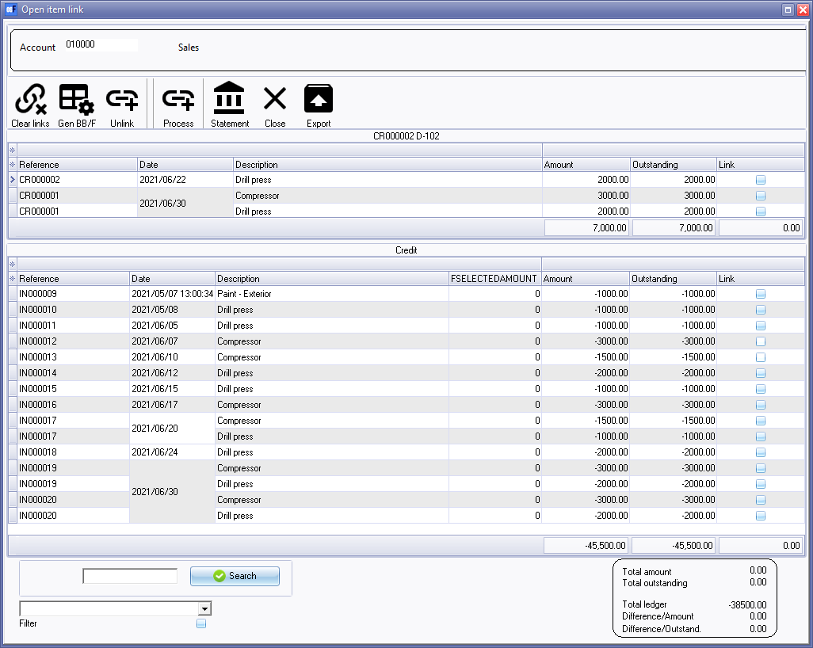
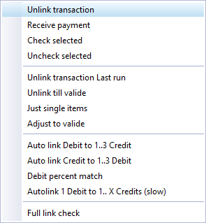
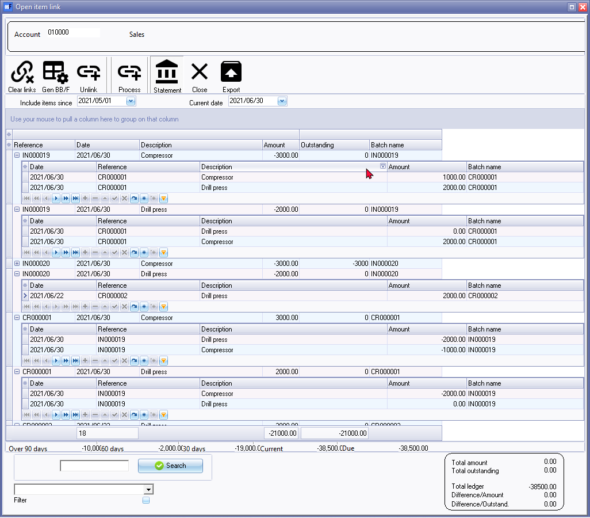

Open item processing - Ledger accounts
How does Open item processing help to manage general ledger accounts?
Open item processing can also be applied to general ledger accounts, particularly in organizations that require detailed tracking and reconciliation of individual transactions within their financial records. Here's how open item processing helps manage general ledger accounts:
- Detailed Transaction Tracking: Open item processing allows for the detailed recording of individual financial transactions within various general ledger accounts. This means that every transaction, whether it's an expense, revenue, asset acquisition, liability, or equity movement, is tracked and recorded with specific details.
- Accurate Account Balances: By meticulously tracking each transaction, open item processing ensures that the account balances for general ledger accounts are accurate and up-to-date. This accuracy is crucial for financial reporting, decision-making, and compliance with accounting standards.
- Transaction Reconciliation: Regular reconciliation processes are employed to match recorded transactions against account balances. This reconciliation helps identify and rectify discrepancies or errors in the general ledger, ensuring the financial data's integrity.
- Audit Trail: Open item processing maintains a comprehensive audit trail, which can be invaluable for internal and external audits. This trail provides a transparent record of all financial transactions, making it easier to verify and ensure the accuracy of financial records.
- Reporting and Analysis: The detailed transaction data recorded through open item processing allows for the generation of various financial reports and analyses. These reports can provide insights into the organization's financial performance, including profit and loss, balance sheets, and cash flow statements.
- Compliance and Accountability: Open item processing helps organizations ensure compliance with financial regulations and accounting standards. It also promotes accountability and transparency in financial management practices.
- Historical Reference: Over time, open item processing creates a historical record of all transactions. This historical reference is valuable for trend analysis, budgeting, forecasting, and other financial planning activities.
- Efficient Error Correction: If errors are identified in the general ledger, open item processing makes it easier to pinpoint the exact transaction or entry that needs correction, streamlining the error resolution process.
In summary, open item processing in general ledger accounts provides a structured and detailed method for recording, reconciling, and maintaining financial transactions. It supports accurate financial reporting, ensures compliance, and facilitates a more efficient and transparent financial management process for organizations of varying sizes and complexities.
Can open item processing be used in other ledger accounts in the chart of accounts, for example suspense or ledger accounts?
Open item processing can potentially be used in any ledger account where there are multiple transactions or outstanding balances to be tracked. However, whether or not it is appropriate to use open item processing in a particular ledger account will depend on the specific nature of the account and the transactions involved.
For example, a suspense account is typically used to temporarily hold transactions that cannot be immediately classified to a specific account. In this case, open item processing may not be appropriate, as the purpose of the account is to temporarily hold transactions that will eventually be classified elsewhere.
Similarly, a general ledger account may not be well-suited to open item processing, as it is typically used to record a summary of all transactions for a particular account or category. In this case, it may be more appropriate to use a subsidiary ledger account, such as an accounts receivable or accounts payable ledger, to track individual transactions using open item processing.
That being said, there may be situations where open item processing could be used in conjunction with other ledger accounts in the chart of accounts. For example, if a particular general ledger account has multiple transactions that need to be tracked separately, it may be possible to use open item processing to track those transactions within the account.
Ultimately, the decision of whether or not to use open item processing in a particular ledger account will depend on a variety of factors, including the nature of the account, the specific transactions involved, and the desired level of detail and accuracy in tracking those transactions.
Open item link - Ledger accounts
Open item link feature may be activated for selected accounts in the Chart of accounts. This allows you to match credit transactions to specific debit transactions and vice versa. The Open item feature is used to manage and reconcile transactions in ledger accounts.
|
|
The "Open item account" setting is not available for the following accounts:
|


The "Open item link" for a specific ledger account may be opened with a double-click from the Totals tab or the Transactions tab on Open item link.
Some examples of such ledger accounts may be;
- Advance accounts - You may wish to keep track and manage advances paid to an employee or salesperson for subsistence and travel. After the employee or salesperson returns from his trip, he return the expenses source documents and refund any unused monies. When processing these source documents in batches, etc., these transactions may be linked (matched) to the original advance.
- Suspense / Clearing accounts - When an transactions needs to be managed, matched or reconciled, etc.
|
|
Age analysis reports for "Open item" ledger accounts is available on the Reports ribbon, or the Due tab of Open item link option on the Default ribbon. |
|
|
Bank accounts should not be set to open item accounts. The allocation of transactions in the Receipts and Payments (batches) journals may be linked matched to specific transactions in the "Open item" ledger accounts, debtor (customer / client) accounts or creditor (supplier / vendor) accounts. Bank account transactions is reconciled to Bank statements in the Cash / Bank entry option on the Default ribbon. |
When processing transactions in batches and documents, the Open item link for a ledger account, may be launched to link and allocate or match transactions specific transactions for open item ledger accounts. Some of these options, is as follows:
- Batch entry - Select transactions on the "Open item selection" screen when processing credit transactions for a specific ledger accounts and match them to debit transactions and visa versa.
|
|
By default, the "Open item selection" feature is enabled in batches. The last column, i.e. "Open item", will be available in "Batch entry" screens. The "Open item selection" feature may be deactivated or activated in "Batch entry" screens. |
- Batch entry - Once a ledger account is selected for a transaction on the "Batch entry" screen, you may right-click and choose the Select from account open item list option on the context menu. The "Open item selection" screen will list all the transactions with outstanding balances. You may select a specific outstanding transaction to link the transaction to.
Open item link - Unlinked Ledger transactions
A simple example of the "Sales" account, where no (or not all) credit transactions (e.g. Credit notes) were linked to specific debit transactions (e.g. Invoices), is as follows:

In this example, the debit section (top half) lists all the Credit notes not matched to Invoices.
|
|
If an Invoice or Credit note includes more than one stock item, e.g. Drill press and Compressor (as in this example), you may link (match) the item on the Credit note to a specific item on the Invoice. |
Open item link - Linked Ledger transactions
An example of the "Sales" account where all credit transactions (e.g. Credit notes) were linked to specific debit transactions (e.g. Invoices), is as follows:

In this example, the debit section (top half) does not list any transactions. All Credit notes is linked to Invoices.
Open item link - Ledger context menu
Right-click on a selected transaction on the list, to launch the context menu for the following processing options:

Open item link - Ledger - Filter options
You may apply the following options to filter transactions:

Open item link - Ledger - Statement
The Statement option list all the transactions from a selected date up to the current date (or selected date. If the transactions on Credit notes and Invoices is matched for the full amount, a 0.00 (zero amount) will be displayed in the in the "Outstanding column".
If transactions is partially matched on an Invoice, the Outstanding amount will differ from the Invoice amount.

|
|
Context menu Right-click on a selected transaction on the list to "Unlink" selected transactions from the context menu. |